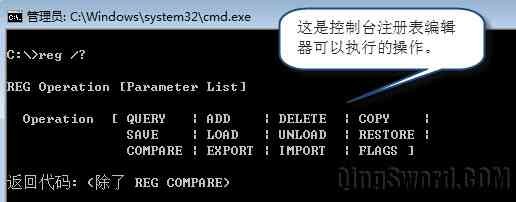
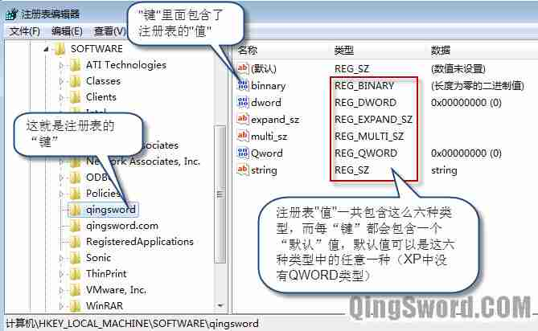
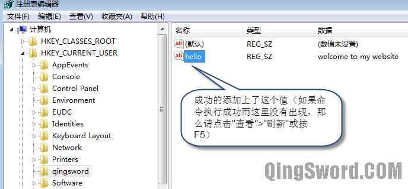

使用Windows命令行reg控制注册表键值
引言
熟悉Windows操作系统的朋友可能都知道，Windows操作系统下的注册表相当于系统的数据库 ，部分软件将自己的配置信息都放在注册表里面，而注册表的破坏可以直接导致系统的崩溃。
而熟悉注册表的朋友对"注册表编辑器（regedit.exe）"一点也不陌生，它提供了一个图形化管理注册表的操作界面，本文要介绍的是另一种管理注册表的方法"控制台注册表编辑器(reg.exe)"，它可以使用纯命令行的模式对注册表进行添加、删除、查看等操作；适用于在批处理中对注册表进行操作。
文章目录
0×1.控制台注册表编辑器在系统中的位置
如果我们的系统装在"C盘"，那么控制台注册表编辑器reg.exe就在"C:\Windows\System32\reg.exe"（一些精简版的系统将这些程序都删除了，这样的情况你可以从其他系统中拷贝一个放置这个目录下）。
要调用"控制台注册表编辑器"只需要打开一个CMD命令行，输入"reg /?"就能看到帮助文件了，如下图所示（注意，Win7以后的系统中必须用管理员身份运行CMD才能对注册表的一些项进行操作，否则会因为权限不足而报错）
0×2.注册表类型结构
首先可以使用管理员权限打开cmd，在其中输入"regedit"回车，就能打开图形界面的注册表编辑器，下面用一张图说明注册表中的三个关键术语："键"、"值"、"值类型"；
实际上图形界面的注册表编辑器已经可以完成所有注册表编辑操作，但有时并没有图形界面，比如只有一个shell，这时想修改注册表的值，就可以用到命令行的注册表编辑器了。
0×3.reg常用命令详解
本节将实例演示如何对注册表进行添加、删除、查看、备份、还原操作，对于其他不常用的功能大家可以自己去摸索。
实例一：使用CMD在根键"HKEY_CURRENT_USER"下创建一个子键"qingsword"，在这个子键中，添加一个值名称为"hello"，类型为"REG_ZS"，数据为"welcome to my website"；
C:\>reg add hkcu\qingsword /v hello /t REG_SZ /d "welcome to my website" 操作成功完成。
在上面的命令中，"reg add" 是添加的意思，HKCU是根键"HKEY_CURRENT_USER"的缩写，另外几个根键的缩写分别为"HKCR"、"HKLM"、"HKU"、"HKCC"，取根键的第一个单词的前两个字母和后面两个单词的前一个字母。
hkcu\qingsword就是在根键"HKEY_CURRENT_USER"下添加一个叫做qingsword的子键，如果这个子键存在，则不作任何操作。
/v 后面跟需要创建的值的名称。/t 后面是值的类型，/d 后面是这个值的数据。
命令成功后，在图形化注册表编辑器中可以查看到改动，显示结果如下图所示，如果没有出现变化请按"F5"刷新：
上图中，值hello上面还有一个默认值，如何更改这个默认值的类型和数据呢？请看下面的命令，需要将/v参数更改成/ve，意思是添加名称是空的默认值（ve=value empty），并将其类型（type）改变成DWORD，数据改成1：
C:\>reg add hkcu\qingsword /ve /t REG_DWORD /d 1 操作成功完成。
更改完成后，大家可以刷新看看默认值是不是更改成了我们设置的样子。
实例二：查看某个注册表项下面的值
#查看刚才创建的整个键下面的所有值的数据 C:\>reg query hkcu\qingsword HKEY_CURRENT_USER\qingsword (默认) REG_DWORD 0x1 hello REG_SZ welcome to my website #如果一个键下面的数据过多，可以使用下面的命令单独查看hello值的数据 C:\>reg query hkcu\qingsword /v hello HKEY_CURRENT_USER\qingsword hello REG_SZ welcome to my website #单独查看默认值的数据 C:\>reg query hkcu\qingsword /ve HKEY_CURRENT_USER\qingsword (默认) REG_DWORD 0x1
实例三：导出和导入注册表
#导出hkcu\qingsword这个键到C盘下命名为qingsword.reg C:\>reg export hkcu\qingsword c:\qingsword.reg #删除hkcu\qingsword键，稍后用导出的注册表文件恢复 C:\>reg delete hkcu\qingsword /f #这时候查看这个键会发生错误，因为上面删除了 C:\>reg query hkcu\qingsword 错误: 系统找不到指定的注册表项或值。 #将刚才备份的文件导入注册表（会覆盖现有数据） C:\>reg import c:\qingsword.reg 操作成功完成。 #再次查询，看到原来的数据了，说明导入成功 C:\>reg query hkcu\qingsword HKEY_CURRENT_USER\qingsword (默认) REG_DWORD 0x1 hello REG_SZ welcome to my website #这个方法可以用来备份注册表的五个根键到指定的目录，以便在注册表被破坏时恢复，比如，备份hkcr这个根键到c盘中，其他的以此类推（图形化界面注册表编辑器可以一次性备份整个注册表） C:\>reg export hkcr c:\hkcr.reg
实例四：删除hkcu\qingsword下刚才创建的"hello"值
#删除"hkcu\qingsword"键下的"hello"值，/f参数表强制删除且不询问，如果不添加则会询问是否删除 C:\>reg delete hkcu\qingsword /v hello /f 操作成功完成。
实例五：删除hkcu\qingsword下刚才修改的"默认"值
#操作完成后，默认值恢复了默认的样子 C:\>reg delete hkcu\qingsword /ve /f 操作成功完成。
通过这篇文章，相信大家对控制台注册表编辑器有了初步的了解，更多的操作可以使用"reg /?"去查看帮助文件；需要注意的是，有些根键下是不能直接创建子键的比如"HKEY_LOCAL_MACHINE"下就算是管理员也不能创建子键，但是可以在更下一级子键中创建比如"HKLM\software\"；当需要操作的键中存在空格，需要用双引号将整个路径引起来。